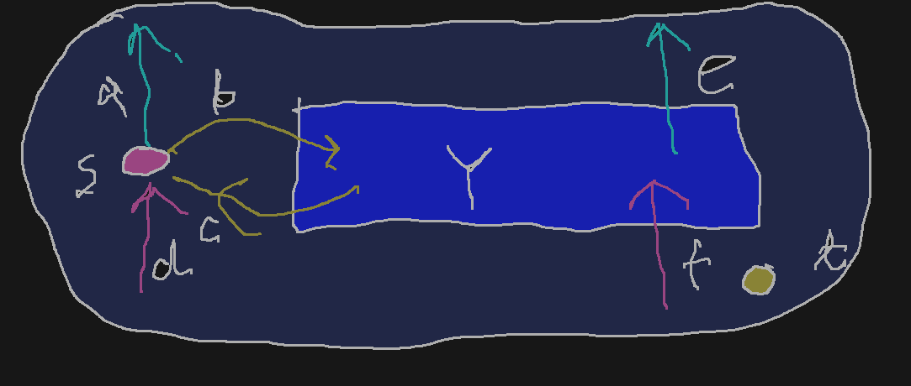

Lemat A
Niech (V,E,s,t,c) będzie siecią. Niech f będzie przepływem w sieci.
Niech X⊆V będzie takim zbiorem, że s∈X oraz t∈/X.
Wówczas ∥f∥=outf(X)−inf(X).
D-d Lematu A
Niech: - Y=X∖{s} - a=f({s},X∁) - b=f({s},Y) - c=f(Y,{s}) - d=f(X∁,{s}) - e=f(Y,X∁) - f=f(X∁,Y)

Wtedy: 1. ∥f∥=(a+b)−(c+d) 2. e+c=f+b (bo Y∩{s,t}=∅) 3. outf(X)−inf(X)=(a+e)−(d+f)
Zatem ∥f∥=(a−d)+(b−c)=(a−d)+(e−f)=(a+e)−(d+f)=outf(X)−inf(X).
Oznaczenie #1
Przepustowością cięcia X (czyli takiego zbioru wierzchołków, że s∈X oraz t∈/X) nazywamy liczbę c(X)=∑{c(e):fst(e)∈X∧snd(e)∈X∁}
Wniosek #1 (Lemat B)
Niech (V,E,s,t,c) będzie siecią. Niech f będzie przepływem w sieci. Niech X⊆V będzie takim zbiorem, że s∈X oraz t∈/X. Wówczas ∥f∥≤c(X)
D-d Lematu B
Korzystając z poprzedniego Lematu mamy ∥f∥=outf(X)−inf(X)≤outf(X)=∑{f(e):fst(e)∈X∧snd(e)∈X∁}≤∑{c(e):fst(e)∈X∧snd(e)∈X∁}=c(X)
Uwaga: poprzedni fakt można zapisać następująco: max{∥f∥:f jest przepływem}≤min{c(X):X jest cięciem}
Twierdzenie (Ford-Fulkerson)
Niech N będzie siecią.
Wówczas max{∥f∥:f jest przepływem N}=min{c(X):X jest cięciem w N}
D-d Twierdzenia (Ford-Fulkerson)
Niech f będzie przepływem o największej możliwej wartości ∥f∥. Niech X będzie zbiorem tych wszystkich wierzchołków x, że istnieje f–ścieżka powiększająca od s do x. Wówczas t∈/X (gdyby t∈X, to moglibyśmy powiększyć f). Jeśli x∈X,y∈X∁ oraz (x,y)∈E, to f((x,y))=c((x,y)) (inaczej mielibyśmy f–ścieżkę powiększającą od s do y). Podobnie, jeśli x∈X,y∈X∁ oraz (y,x)∈E, to f((y,x))=0 (inaczej mielibyśmy f–ścieżkę powiększającą od s do y).
Zatem ∥f∥=outf(X)=inf(X)=c(X)−0=c(X)
Source: Bela Bollobas, Modern Graph Theory, Springer, 1998
Metoda Forda-Fulkersona
f := 0;
WHILE istnieje f-ścieżka powiększająca
P := jakaś ścieżka f-powiększająca;
f := f poprawione o P
ENDWHILE
Uwaga: powyższy pseudokod nazywamy metodą, a nie algorytmem, bo nie określamy jak wybierać ścieżkę f–powiększającą
Przykład (Metoda Forda-Fulkersona)
Przykład sieci, dla której metoda ta działa bardzo długo:
Rozważamy prostą sieć z czterema wierzchołkami. Zaczynamy od potoku równego zero. Rozważamy dwie ścieżki powiększające: P=(s,a,b,t) oraz Q=(a,b,a,t)
Po tych dwóch krokach przepustowość zwiększyliśmy o 2. Po 98 kolejnych krokach P,Q,P,Q…,P,Q dojdziemy do przepływu o maksymalnej wartości równej 200.
Zauważmy, że gdybyśmy stosowali inne ścieżki powiększające (s,a,t) oraz (s,b,t) to po dwóch krokach otrzymalibyśmy maksymalny przepływ.
Fakt #1
Jeśli funkcja ograniczeń przyjmuje wartości naturalne (czyli c∈NE), to metoda Forda-Fulkersona kończy swoje działanie po skończonej liczbie kroków.
Fakt #2
Jeśli c przyjmuje wartości niewymierne, to może się zdarzyć (przy doborze „złośliwej” funkcji c), że metoda ta działa nieskończenie długo i, o zgrozo, nawet graniczny potok nie jest najlepszy!
Algorytm Edmontona-Karpa
f := 0
WHILE istnieje f-ścieżka powiększająca
P := jakaś ścieżka f-powiększająca o najkrótszej (w sensie liczby wierzchołków) długości
f := f poprawione o P
ENDWHILE
Twierdzenie #2
Algorytm Edmontona-Karpa kończy swoje działanie po skończonej liczbie kroków i zwraca przepływ o największej wartości.
D-d Twierdzenia #2
- Wprowadźmy pojęcia grafu f-powiększającego: Ff={(x,y)∈E:f((x,y))<c((x,y,))}∪∪{(x,y):(y,x)∈E∧f((y,x))>0} i definiujemy df(x)=dGf(s,x).
- Pokazujemy, że jeśli f′ jest potokiem otrzymanym z potoku f przez zastosowanie ścieżki powiększającej o najkrótszej długości, to df(x)≤df′(x) dla każdego wierzchołka x.
- Definiujemy pojęcie krawędzi aktywnej na ścieżce powiększającej: jest to taka krawędź, na której zmieniamy wartość potoku. Zauważamy, że na każdej ścieżce musi być krawędzi aktywna.
- Sprawdzamy, że jeśli krawędź e=(x,y) była aktywna w krokach i oraz j i jednocześnie i<j to dfj(x)≥dfi(x)+2.
- Wnioskujemy, że krawędź może być aktywna co najwyżej 2∣V∣ razy.
- Z tego wnioskujemy, że główna pętla może być wykonywana przez co najwyżej 2∣E∣⋅∣V∣ razy.
- To w zasadzie wystarcza. Ale można się zastanowić nad złożonością pod-procedury wyznaczania ścieżek powiększających. Graf Gf ma co najwyżej 2∣E∣ krawędzi. Algorytm przeszukiwania wszerz wykonywany jest w czasie O(∣V∣+∣E∣).
Zatem złożoność algorytmu można oszacować przez O((∣V∣+∣E∣)⋅∣V∣⋅∣E∣). Można to zrobić lepiej – więcej w source. Dla nas ważne jest to, że algorytm ten działa w czasie wielomianowym od ∣V∣ i ∣E∣.
Source: CLRS